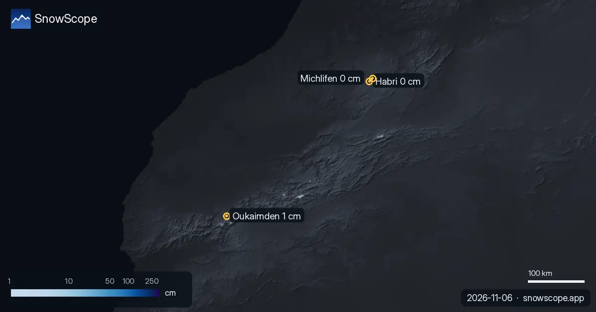
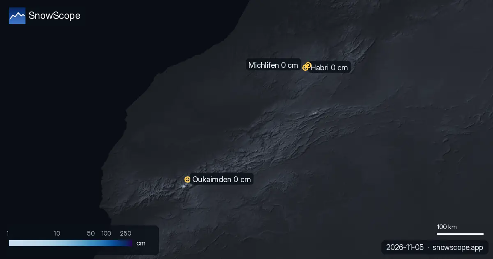

Michlifen e Ifrane a dicembre: la neve c'è?
Ifrane sotto la neve è un'immagine da cartolina. Ma per sciare a Michlifen a dicembre, il nostro storico di 46 inverni è chiaro: il più delle volte non ce n'è abbastanza. Il 15 dicembre, il pendio è quasi nudo (meno di 5 cm) nell'89 % degli inverni.
Le previsioni neve in tempo reale per Michlifen ski resort nell'app SnowScopeAltezza neve, allerte powder e mappa 3D, gratis.Una piccola stazione, a bassa quota
Michlifen si trova a 13 km in linea d'aria da Ifrane, secondo il nostro calcolo. Vi seguiamo la neve a 1870 m, 1970 m e 2070 m: molto più in basso di Oukaïmeden, la cui metà montagna è a 2929 m, e questo cambia tutto. Nel Medio Atlante la neve cade spesso, ma tiene poco.

Dicembre, in numeri
Il 15 dicembre, l'altezza tipica è di 0 cm a tutte e tre le quote, e persino un dicembre generoso, uno su dieci inverni, dà solo 5 cm a metà montagna. Il 31 dicembre, è 0 cm in un inverno tipico, 17 cm in un inverno abbondante, e il pendio resta quasi nudo nell'83 % degli inverni.
La prima neve duratura arriva di solito intorno al 14 dicembre a metà montagna, ma sparisce in fretta: un inverno tipico conta solo 24 giorni con neve al suolo.

I buoni inverni esistono
L'inverno scorso è stata l'eccezione che conferma la regola: 50 cm a metà montagna il giorno di Natale 2025, e un picco di 51 cm nella stagione, con 48 giorni di neve. Al vicino Jbel Hebri lo scenario è lo stesso: 48 cm a Natale 2025, mentre un inverno tipico lì conta 20 giorni di neve.
Il resto del tempo, la neve del Medio Atlante si vive in pochi giorni: un episodio, un weekend bianco, poi il disgelo.
Michlifen o Oukaïmeden?
Per sciare a dicembre, Oukaïmeden è nettamente più sicura: 16 cm a metà montagna il 15 dicembre in un inverno tipico, e il 43 % degli inverni con almeno 25 cm, contro il 2 % a Michlifen. Anche lassù, dicembre resta una scommessa. Michlifen si gioca giorno per giorno, a gennaio o febbraio, dopo una nevicata.
Consigli per sciatori
- Non pianificate un viaggio di sci a dicembre a Michlifen: osservate una nevicata e partite subito.
- Per le foto di Ifrane sotto la neve, spesso basta un giorno dopo una tempesta.
- Strade del Medio Atlante: attenzione al ghiaccio mattutino dopo una nevicata.
- Se tenete allo sci di dicembre, guardate piuttosto verso Oukaïmeden, e controllate la nostra mappa prima di partire.
Riferimenti e crediti
- OpenSkiMap (mapped lifts and runs) openskimap.org/
Su questi numeri
Numeri della neve: storico neve SnowScope, 46 inverni passati (1980-81 - 2025-26) alle quote indicate (base, metà, vetta), una ricostruzione della neve passata per un'area corretta per la quota (basata su ERA5-Land; Snow_Hydro 1 km per il Marocco), non i bollettini della località. Neve attuale: la mappa SnowScope. Impianti, piste e quote: mappatura OpenSkiMap. Prezzi: le pagine ufficiali elencate qui sotto, lette il 13 novembre 2026; i prezzi dinamici cambiano con la data e la domanda.
Cita questo articolo
Per ricerca, didattica o stampa: numeri e grafici sono liberamente riutilizzabili con licenza CC BY 4.0 citando così.
SnowScope (2026), Michlifen e Ifrane a dicembre: la neve c'è?, https://snowscope.app/blog/it/2026/11/michlifen-ifrane-neige-decembre-moyen-atlas.html, consultato il 2026-11-14
SnowScope (Atlas Labs). (2026, November 14). Michlifen e Ifrane a dicembre: la neve c'è?. SnowScope snow reports. https://snowscope.app/blog/it/2026/11/michlifen-ifrane-neige-decembre-moyen-atlas.html
BibTeX
@misc{snowscope2026michlifenifraneneigedece,
author = {{SnowScope (Atlas Labs)}},
title = {Michlifen e Ifrane a dicembre: la neve c'è?},
year = {2026},
month = nov,
howpublished = {\url{https://snowscope.app/blog/it/2026/11/michlifen-ifrane-neige-decembre-moyen-atlas.html}},
note = {Published 2026-11-14 13:29 UTC; accessed 2026-11-14}
}· CC BY 4.0 · Metodi, dati e strumenti →
Michlifen ski resort: neve e temperatura per quota, quest'inverno vs lo scorso (strumenti) →
Segui Michlifen ski resort
Gratis: un messaggio quando arriva la neve e il meteo ogni mattina.
Altri bollettini neve

Le località sciistiche dell'Atlante oggi non hanno neve sulle piste. Il nostro modello trova neve solo sulle vette più alte: circa 80 km² di …

Oukaimden (Marocco) ha oggi la neve più alta sull'Atlante (Marocco), con circa 1 cm sui pendii superiori. Seguono Habri con 0 cm e Michlifen con …

Le località sciistiche dell'Atlante oggi non hanno neve sulle piste. Il nostro modello trova neve solo sulle vette più alte: circa 60 km² di …